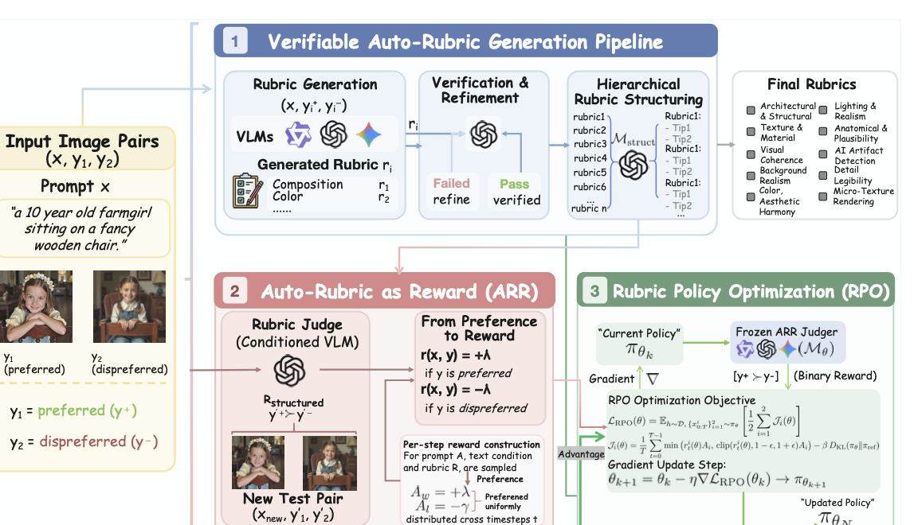
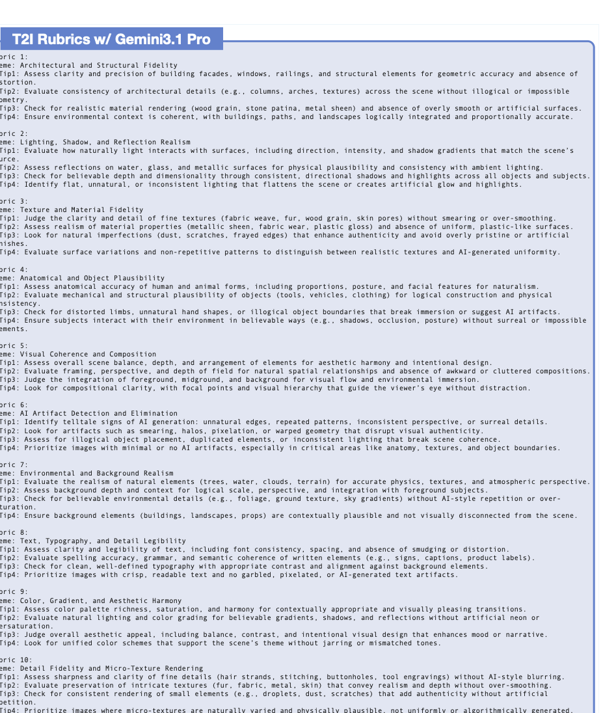
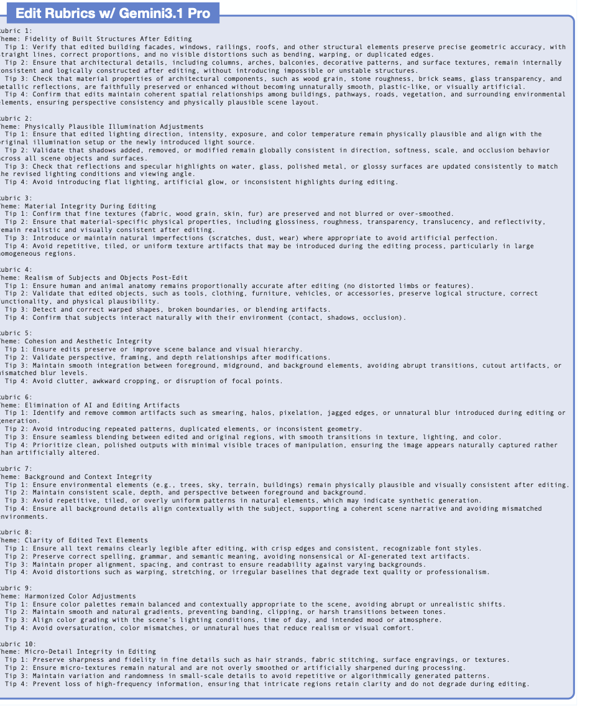
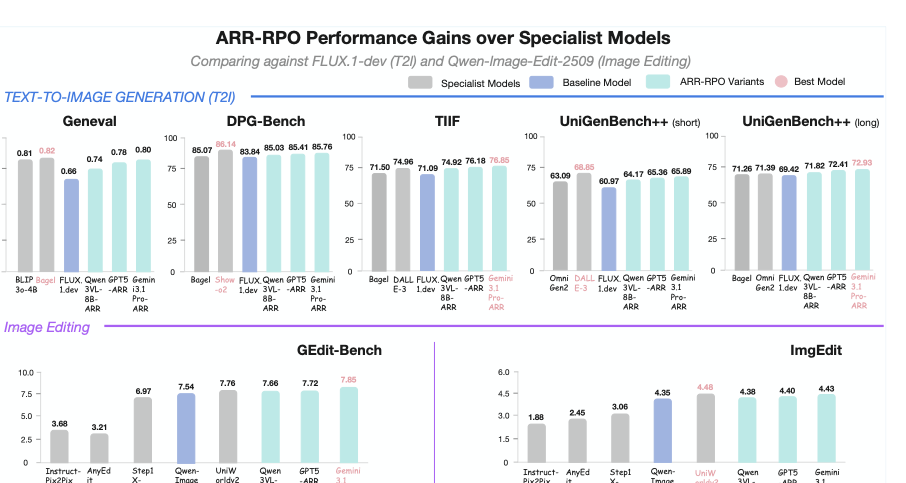
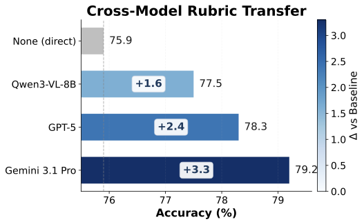
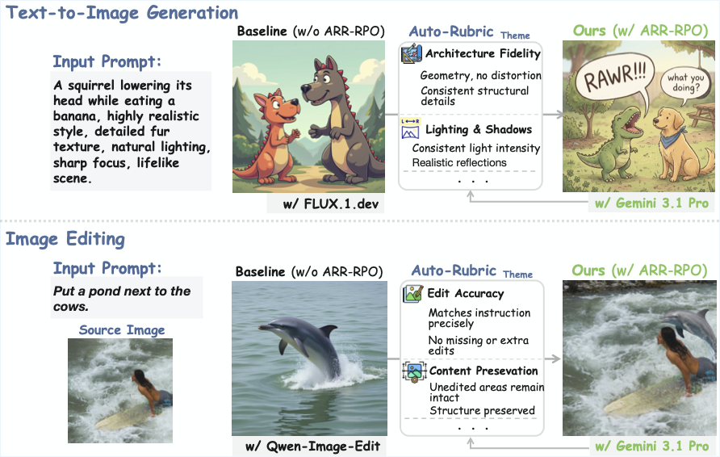
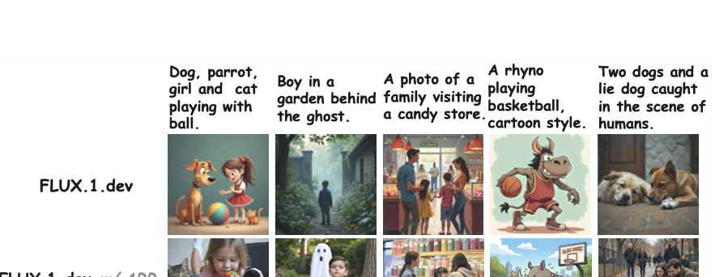
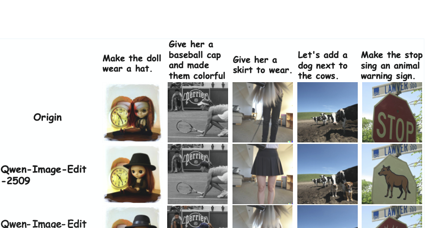

Generate Criteria
Start from labeled supervision and ask a VLM to spell out the exact visual dimensions that should matter for scoring or ranking.
Explicit reward criteria for visual generation
From Implicit Preferences to Explicit Multimodal Generative Criteria
Auto-Rubric as Reward converts a small set of labeled visual supervision into readable rubric text, supports both pointwise and pairwise VLM grading, and lets practitioners freely scale up the rubric dimensions they care about. On top of that, we provide a concise pairwise online RL algorithm for diffusion models that emphasizes data efficiency, training stability, and scalability, verifying that Rubric as Reward extends beyond multimodal reasoning into multimodal generation, including text-to-image and image editing.

The judge no longer improvises a standard from scratch on every comparison.
Once the desired dimensions are written down, different VLM judges stop improvising the evaluation standard and start aligning around the same task-specific notion of quality.
Start from labeled supervision and ask a VLM to spell out the exact visual dimensions that should matter for scoring or ranking.
Keep only rubrics that recover the intended answer in pointwise or pairwise settings, and revise them when they miss the target.
Reuse the verified rubric set inside a frozen judge and connect it to a minimal pairwise online RL loop for diffusion training.
Abstract
Aligning multimodal generative models with human preferences requires reward signals that preserve the compositional and multi-dimensional structure of judgment. Auto-Rubric as Reward reframes reward modeling from implicit weight optimization to explicit, criteria-based decomposition: before any comparison, it externalizes a VLM's internalized preference knowledge into prompt-specific rubrics, verifies those criteria against minimal supervision, and consolidates them into a reusable structured protocol for pointwise grading, pairwise evaluation, and reward construction. By converting latent preference structure into inspectable multimodal criteria, ARR reduces positional bias, improves data efficiency, and exposes a stable factorized interface for both zero-shot evaluation and downstream generative alignment.
The central bottleneck is not that VLMs lack preference knowledge, but that existing scalar and pairwise objectives fail to expose a stable factorized interface for applying it. ARR addresses this mismatch by transforming holistic, latent judgments into explicit and independently verifiable multimodal criteria, thereby improving interpretability, reducing reward hacking risk, and suppressing positional bias.
ARR supports both pointwise and pairwise VLM evaluation, then extends naturally into multimodal generation through rubric- conditioned policy optimization. In the paper, this interface scales from evaluator fidelity benchmarks to text-to-image and image-editing post-training, where explicit criteria become a reusable supervision substrate rather than a task-specific prompt trick.
Contributions
ARR externalizes implicit multimodal preferences into prompt-conditioned natural-language rubrics that are interpretable, verifiable, and highly data-efficient.
The same rubric interface supports scalar-style pointwise grading and pairwise comparison, allowing one structured preference representation to unify evaluation, ranking, and reward construction.
The paper argues that multimodal alignment is bottlenecked less by missing knowledge than by the absence of a stable, factorized interface for expressing and applying preference.
We also introduce a concise pairwise diffusion online RL algorithm that emphasizes data efficiency, training stability, and scalability, validating Rubric as Reward in text-to-image and image editing rather than only multimodal reasoning.
Method
Each supervised example becomes a prompt for extracting the dimensions that should matter, whether the downstream task needs pointwise scoring or pairwise ranking.
The same rubric must recover the desired supervision signal. If the generated criteria fail under grading, the system refines them instead of passing noisy reward logic downstream.
Verified rubrics are grouped into reusable themes and tips, then consumed by a frozen VLM judge whose outputs can power evaluation or pairwise online RL for generation models.


Benchmarks
The paper shows two complementary effects: rubric-conditioning makes VLM judging more reliable, and ARR-RPO translates that better supervision into stronger text-to-image and image-editing performance.
Auto-Rubric can serve scalar grading, comparison, and reward construction in one workflow.
Researchers can expand rubric dimensions toward fidelity, preservation, composition, artifacts, or domain-specific constraints.
The paper validates Rubric as Reward on multimodal generation with diffusion-based text-to-image and image-editing training.


Preference Evaluation
Accuracy denotes how often the judge matches the annotated preference.
| Method | HPDv3 | MM-RewardBench2 (T2I) | MM-RewardBench2 (Edit) | EditReward-Bench |
|---|---|---|---|---|
| Trained reward model | ||||
| PickScore | 65.6 | 58.6 | --- | --- |
| ImageReward | 58.6 | 54.0 | --- | --- |
| UnifiedReward | 66.0 | 59.8 | --- | --- |
| UnifiedReward-Thinking | 68.1 | 66.0 | --- | --- |
| HPSv3 | 76.9 | 60.2 | --- | --- |
| EditReward | --- | --- | 67.2 | 56.45 |
| VLM-as-Judge (direct) | ||||
| Qwen3-VL-8B | 67.2 | 57.6 | 59.2 | 54.01 |
| GPT-5 | 72.4 | 70.5 | 73.8 | 57.53 |
| Gemini 3.1 Pro | 76.6 | 75.1 | 77.4 | 61.23 |
| ARR (ours) | ||||
| Qwen3-VL-8B + ARR | 70.2 (+3.0) | 62.7 (+5.1) | 65.5 (+6.3) | 57.22 (+3.21) |
| GPT-5 + ARR | 76.1 (+3.7) | 74.7 (+4.2) | 77.5 (+3.7) | 61.01 (+3.48) |
| Gemini 3.1 Pro + ARR | 78.3 (+1.7) | 78.9 (+3.8) | 79.2 (+1.8) | 63.27 (+2.04) |
Generative Quality
The strongest results come from rubric-conditioned judges, especially with Gemini 3.1 Pro.
| Method | GenEval | DPG-Bench | TIIF | UniGen++ Short | UniGen++ Long | GEdit-Bench | ImgEdit |
|---|---|---|---|---|---|---|---|
| Specialist model (T2I) | |||||||
| Emu3 | 0.54 | 80.60 | -- | 45.42 | 50.59 | --- | --- |
| JanusFlow | 0.63 | 79.68 | -- | 47.10 | 54.80 | --- | --- |
| FLUX.1-Dev | 0.66 | 83.84 | 71.09 | 60.97 | 69.42 | --- | --- |
| DALL·E 3 | 0.67 | 83.50 | 74.96 | 68.85 | 70.82 | --- | --- |
| Show-o2 | 0.76 | 86.14 | -- | 61.90 | 70.33 | --- | --- |
| OmniGen2 | 0.80 | 83.57 | -- | 63.09 | 71.39 | --- | --- |
| BAGEL | 0.82 | 85.07 | 71.50 | 59.91 | 71.26 | --- | --- |
| ARR-RPO / T2I (ours) | |||||||
| w/ RPO-Qwen3-VL-8B-ARR | 0.74 (+0.08) | 85.03 (+1.19) | 74.92 (+3.83) | 64.17 (+3.20) | 71.82 (+2.40) | --- | --- |
| w/ RPO-GPT-5-ARR | 0.78 (+0.12) | 85.41 (+1.57) | 76.18 (+5.09) | 65.36 (+4.39) | 72.41 (+2.99) | --- | --- |
| w/ RPO-Gemini 3.1 Pro-ARR | 0.80 (+0.14) | 85.76 (+1.92) | 76.85 (+5.76) | 65.89 (+4.92) | 72.93 (+3.51) | --- | --- |
| Specialist model (editing) | |||||||
| Instruct-Pix2Pix | --- | --- | --- | --- | --- | 3.68 | 1.88 |
| AnyEdit | --- | --- | --- | --- | --- | 3.21 | 2.45 |
| Step1X-Edit | --- | --- | --- | --- | --- | 6.97 | 3.06 |
| Qwen-Image-Edit-2509 | --- | --- | --- | --- | --- | 7.54 | 4.35 |
| UniWorldv2 | --- | --- | --- | --- | --- | 7.76 | 4.48 |
| ARR-RPO / image editing (ours) | |||||||
| w/ RPO-Qwen3-VL-8B-ARR | --- | --- | --- | --- | --- | 7.66 (+0.12) | 4.38 (+0.03) |
| w/ RPO-GPT-5-ARR | --- | --- | --- | --- | --- | 7.72 (+0.18) | 4.40 (+0.05) |
| w/ RPO-Gemini 3.1 Pro-ARR | --- | --- | --- | --- | --- | 7.85 (+0.31) | 4.43 (+0.08) |
Qualitative Results



Citation
If Auto-Rubric as Reward contributes to your work, please cite the project and link back to the official repository.
@misc{tian2026autorubricrewardimplicitpreferences,
title={Auto-Rubric as Reward: From Implicit Preferences to Explicit Multimodal Generative Criteria},
author={Juanxi Tian and Fengyuan Liu and Jiaming Han and Yilei Jiang and Yongliang Wu and Yesheng Liu and Haodong Li and Furong Xu and Wanhua Li},
year={2026},
eprint={2605.08354},
archivePrefix={arXiv},
primaryClass={cs.AI},
url={https://arxiv.org/abs/2605.08354},
}